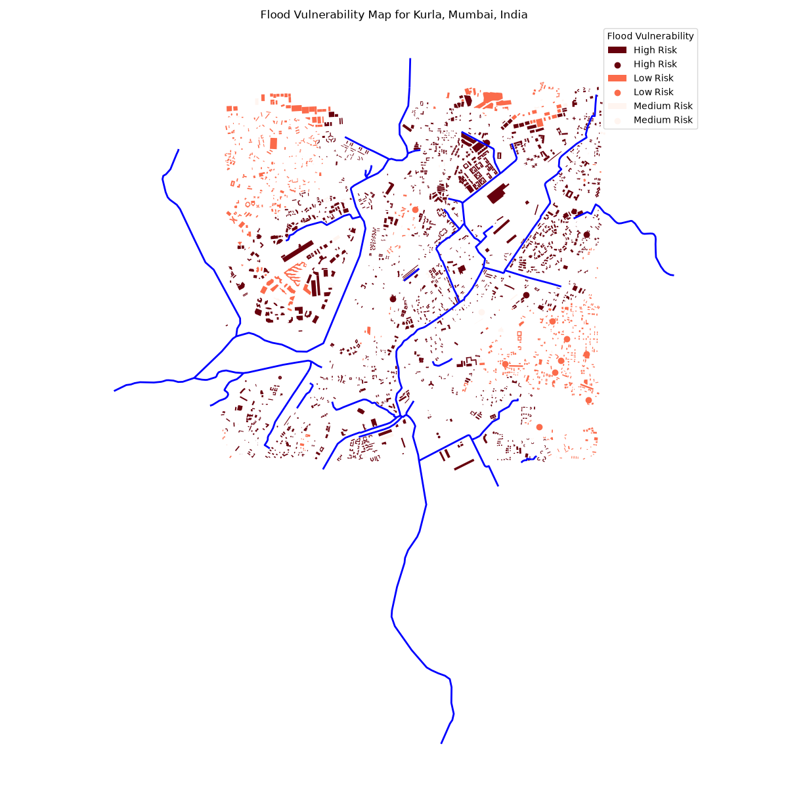

The analysis processed 2285 buildings and assigned each to a three-cluster flood vulnerability grouping using elevation, distance, terrain, and hydrology features. The distribution and model diagnostics below are calculated from the current pipeline run.
The study area is defined by the OSM building extent for Kurla, Mumbai, India and the associated DEM coverage. Distances are calculated in projected metric coordinate systems, while map outputs use EPSG:4326.
| Source | Use |
|---|---|
| OpenStreetMap | Buildings and waterways |
| DEM | D:\MiniProjectTayyabsirDrive\clustering-based-flood-analysis\Project_Files\kurla.tif |
| K-Means | Unsupervised risk grouping |
| Feature | Mean | Median | Min | Max |
|---|---|---|---|---|
| elevation | 9.440 | 9.000 | -1.500 | 33.000 |
| dist_to_river | 313.962 | 249.416 | 0.000 | 1184.723 |
| slope_deg | 86.756 | 89.989 | 0.000 | 89.998 |
| local_relief_m | 4.008 | 4.000 | 0.000 | 19.000 |
| dist_to_major_waterway | 517.203 | 376.788 | 0.000 | 1735.036 |
| waterway_density_300m | 0.001 | 0.001 | 0.000 | 0.007 |
| dist_to_drainage_m | 333.373 | 274.075 | 0.000 | 1184.723 |
| Risk level | Buildings | Percentage |
|---|---|---|
| High Risk | 1514 | 66.258 |
| Medium Risk | 82 | 3.589 |
| Low Risk | 689 | 30.153 |
| Risk level | elevation | dist_to_river | slope_deg | local_relief_m | dist_to_major_waterway | waterway_density_300m | dist_to_drainage_m |
|---|---|---|---|---|---|---|---|
| High Risk | 7.884 | 179.216 | 89.985 | 3.976 | 305.124 | 0.002 | 205.651 |
| Low Risk | 12.937 | 612.673 | 89.986 | 4.312 | 988.770 | 0.000 | 616.448 |
| Medium Risk | 8.780 | 291.919 | 0.000 | 2.049 | 470.614 | 0.001 | 313.030 |
| Metric | Value |
|---|---|
| Silhouette | 0.385 |
| Davies-Bouldin | 0.925 |
| Calinski-Harabasz | 1065.079 |

Features: elevation, dist_to_river, slope_deg, local_relief_m, dist_to_major_waterway, waterway_density_300m, dist_to_drainage_m
Parameters: K-Means clusters=3, random_state=42, n_init=10; median imputation; standard scaling.